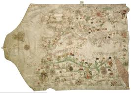

Веле́нь (фр. Vélin, лат. Vellum) — материал для письма или книгопечатания из шкур млекопитающих. Название происходит от фр. vélin, что означает «телячья кожа». Процесс производства веленя полностью совпадает с производством пергамента. Основное отличие веленя от пергамента — это используемые в производстве материалы и качество выделки.
